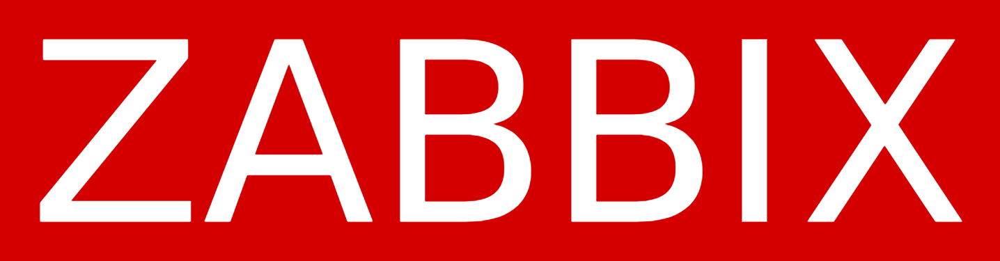
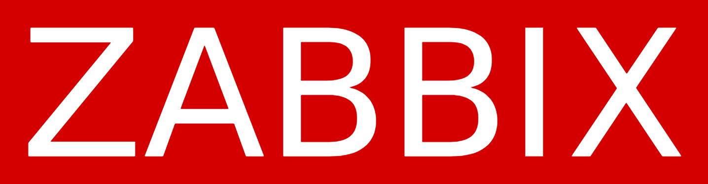
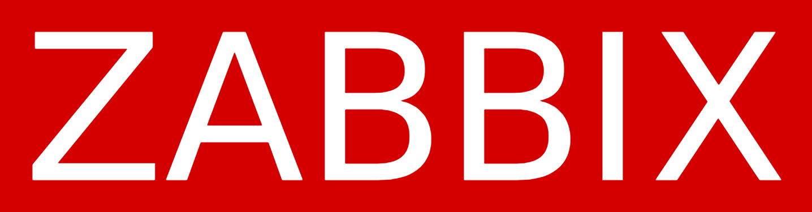

Tecnologias Utilizadas

 



Atuamos em ambientes corporativos críticos com SLA definido, monitoramento 24/7 e foco absoluto em disponibilidade e segurança.
Atendimento remoto e presencial com SLA e gestão de chamados.
Proteção de borda, VPNs e controle de acesso corporativo.
Microsoft 365, backup em nuvem e continuidade do negócio.
Zabbix com alertas proativos e indicadores de desempenho.
Cabeamento, Wi-Fi corporativo e balanceamento de links.
Boas práticas, segurança da informação e conformidade.

“Reduzimos drasticamente falhas após a implantação do monitoramento. Hoje temos total controle do ambiente.”
Gestor de TI — Empresa Corporativa“Equipe técnica extremamente preparada e com visão de negócio.”
Diretor Administrativo“Atendimento rápido, profissional e com SLA real.”
Coordenador de Infraestrutura